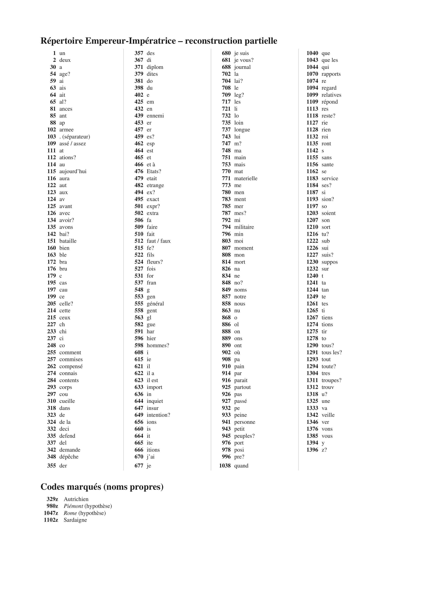

George Lasry’s decipherment
George Lasry’s report on this item, as he sent it on 24 October 2026 (PDF), in its own order and wording. The decipherment, the translation and the reconstruction of the key are his, made with ChatGPT Astra 6 and Anthropic Opus 5.5. This project’s own checks follow under Verification.
NAF 11355 — Emperor–Empress code
Contents: Napoleon III’s policy toward the Pope, his criticism of diplomatic speculation, and reports from the Italian campaign; private family news exchanged with Empress Eugénie.
15/15 pages transcribed; 9/11 cipher pages deciphered; 2 more in part
- Ciphertext-only:
- Yes
- Sender:
- Napoleon III / Empress Eugénie (both directions)
- Recipient:
- Empress Eugénie / Napoleon III (both directions)
- Year:
- June 1859
- Key:
- 233 codes, 12 letter signs, 220 in nomenclature, 1 separator
- Ciphertext:
- 440 elements, 370 identified (84.1%); 4 assumed readings; 50 ?
- Literal plaintext:
- f35r: L’ennemi s’est retiré cette nuit. — One ciphered sentence only; fatigue passage not
Gallica f3r · Gallica f9r · Gallica f14r · Gallica f17r · Gallica f27r · Gallica f29r · Gallica f32r · Gallica


Excerpt and Translation
f19r — the Pope and diplomacy

Excerpt
Je suis bien peiné au milieu de mes travaux d’avoir à répondre à toutes les sotte[s] suppositions de la diplomatie. Je maintiens le pape à Rome avec mon armée. Je ne me mêle en rien du reste de ses États.
Translation
I am very distressed, amid my work, to have to answer all the foolish suppositions of diplomacy. I keep the Pope in Rome with my army. I do not interfere in any way with the rest of his States.
f35r — the battle and the Austrian emperor’s room

Excerpt
Impossible de donner des détails sur la bataille d’hier. Tout [le] monde était mort de fatigue. L’ennemi s’est retiré cette nuit. J’ignore le nombre précis de canons, de drapeaux et de prisonniers. J’ai couché cette nuit dans la chambre où l’Empereur d’Autriche a déjeuné hier matin. Niel est nommé Maréchal. La bataille prendra le nom de Solférino.
Translation
It is impossible to give details of yesterday’s battle. Everyone was dead tired; the enemy withdrew during the night. I do not know the exact number of cannon, flags and prisoners. I slept last night in the room where the Emperor of Austria had breakfast yesterday morning. Niel has been appointed Marshal. The battle will be named Solferino.
f27r — Eugénie’s message

Excerpt
Je suis désolée de vous avoir fait de la peine, ce n’était? pas mon intention. Ne vous inquiétez pas du petit, il va à merveille. J’écris aujourd’hui par la poste.
Translation
I am sorry to have caused you sorrow; that was not? my intention. Do not worry about the little one; he is doing wonderfully. I am writing today by post.
Readable text
The full text, folio by folio, as in the report. Bold marks the passages deciphered from the cipher; the rest is the clear text of the letter. Question marks are the report’s: [?] or a bare ? for a sign or group left unread, a ? after a word for a doubtful reading.
NAF 11355 — Napoléon III et Eugénie
f3r · PDF 13
· Gallica
Empereur à Impératrice, St Cloud.
Rien de nouveau ce matin, les choses vont bien. Je t’embrasse. Au revoir.
f4r · PDF 15
· Gallica
Novare, 2 juin 1859. L’Empereur à l’Impératrice, St Cloud.
Je suis à Novare depuis hier soir avec 100,000 hommes. Cette ville n’a pas été défendue. Mon armée était il y a quatre jours sur la rive droite du Pô à 25 lieues d’ici. J’ai reçu le rapport officiel du combat de Palestro. Il prouvera que, contrairement à nos ennemis, nous restons en dessous de la vérité. Les zouaves ont pris 9 canons, fait 700 prisonniers dont 9 officiers. Les pertes de l’ennemi ont été très sensibles, car on évalue à 500 le nombre des Autrichiens noyés en se sauvant.
Les pertes des zouaves sont aussi plus considérables que je ne l’avais dit. Nous avons à regretter 46 tués, dont un capitaine, 229 blessés dont 18 officiers — 20 noyés en poursuivant l’ennemi. — Au revoir.
f5r · PDF 17
· Gallica
Novare, 3 juin 1859. L’Empereur à l’Impératrice, St Cloud. 101 mots.
865? 442 163 824 204 543 225
J’ai jeté trois ponts sur le Tessin ; j’ai un corps d’armée sur la rive gauche ; les Autrichiens sont en pleine retraite ; il y a eu un combat aujourd’hui pendant que j’y étais, devant la tête de pont ; cela n’a pas duré longtemps, et, chose singulière, le général Auger a pris un canon à l’ennemi. Je rentre bien fatigué, mais bien portant. Il y a tout au plus aujourd’hui quatre ou cinq tués et une vingtaine de blessés. Au revoir.
f9r · PDF 25
· Gallica
Milan, 9 Juin 1859. L’Empereur à l’Impératrice, St Cloud.
432 1210 85 126 702 588 / 65? / 27? Aujourd’hui Te Deum au Dôme. Enthousiasme extraordinaire. Évêque officiant. La Garde Impériale formait la haie. En sortant avec le Roi, tous les prêtres m’ont baisé les main[s] ; les femmes s’agenouillai[ent], les hommes étai[en]t exaltés au delà de toute expression ; toutes les troupes étai[en]t couvertes de fleurs 485, mais nous avons de la peine à trouver du pain.
f14r · PDF 35
· Gallica
N° 3977. Service. Paris n° 16445? 13 — 11 h. 08. Exp. à 10 h. 00.
Impératrice à Empereur — Gorgonzola.
Tout va bien ici. Monsieur Schmidt vient d’arriver avec votre lettre.
E.
f15r · PDF 37
· Gallica
Chiari, 16 Juin 1859. Empereur à Impératrice, St Cloud.
753
Quartier Impérial de Covo, 16 Juin 1859.
L’armée aura? passé aujourd’hui l’Oglio sans résistance. Nous suivons l’armée autrichienne? pas à pas. Je re 310 925 des 981 le 81 1099 123 495 656 257 par? l’ennemi. Je vais bien. Au revoir.
f17r · PDF 41
· Gallica
Travagliato, 17 Juin 1859, 3 h. 30. Empereur. Impératrice, St Cloud.
1098
Je couche ce soir à Travagliato. Nous espérons une bataille? sur? Chiese?, mais l’ennemi paraît décidément se retirer derrière le Mincio. L’état moral et physique de l’armée est excellent. Au revoir.
f18r · PDF 43
· Gallica
Brescia, 18 Juin 1859, 12 h. 20. Empereur à Impératrice, St Cloud.
504 L’armée est arrivée à Brescia, nous ne savons pas encore si les Autrichiens? défendront les positions de Lonato et de Castiglion[e]. Tout va bien, au revoir.
f19r · PDF 45
· Gallica
Brescia, 19 Juin 1859. Empereur à Impératrice, St Cloud.
302
Je suis bien peiné au milieu de mes travaux d’avoir à répondre à toutes les sotte[s] suppositions de la diplomatie. Je maintiens le pape à Rome avec mon armée. Je ne me mêle en rien du reste de ses États. Le roi de Sardaigne? n’accepte pas la dictature? des Légations?. Tout ce qu’on dit du Piémont? est faux ; les peuples mécontents? s’insurgent dès que la force matérielle? s’éloigne d’eux sans qu’il y ait besoin de chercher une cause étrangère? à ce mouvement.
136
f27r · PDF 59
· Gallica
St Cloud, le 23 Juin 1859, à 5 h. 25. L’Impératrice à l’Empereur, armée d’Italie.
Je suis désolée? de vous avoir fait de la peine, ce n’était pas mon intention. Ne vous inquiét[e]z pas du petit, il va à merveille. J’écris aujourd’hui par la poste.
f29r · PDF 63
· Gallica
Montechiari, 23 Juin 1859. L’Empereur à l’Impératrice, St Cloud.
163 455
J’ai reçu trois lettres de vous aujourd’hui la longue a compensé la peine que les autre[s] m’ont fait[e]. J’ai brûlé ce matin celle que je vous avais répondu. Quand on est loin, il faut y regarder à deux fois avant de faire de la peine à ceux qui? aime[nt].
Dites au Maréchal Randon de mettre des extraits des rapports de Magenta dans [le] journal militaire ; l’important est que les noms des officiers? soient mentionné[s]. Je suis inquiet de la santé de notre fils ; dites-moi franchement comment il est.
De Cotte était de service hier, il se portait très bien. Il a? couch[é] à ma port[e] et à mi-nuit ; au moment où on lui apportait un[e] dépêche, il est mort subitement 263.
f30r · PDF 65
· Gallica
St Cloud, le 24 Juin 1859, à 5 h. 20. L’Impératrice à l’Empereur, Montechiari.
Tout va bien ici. Le petit va à merveille. J’attends de vos nouvelles avec bien de l’impatience.
La mèr[e] de de Co[t]te demande le corps du général et son fils 768 162z le 1046 dites harassé de fatigue
f32r · PDF 69
· Gallica
Cavriana, 24 Juin 1859, 9 h. 1/4 soir. Empereur à Impératrice, St Cloud.
163 723?
Grande bataille et grande victoire ! Toute l’armée autrichienne a donné. Ligne de bataille 5 lieues. Enlevé toutes les positions. Pris beaucoup de canons, de drapeaux et de prisonniers.
Personne de connaissance blessé.
Autres détails impossibles. La bataille a duré depuis 4 heures du matin jusqu’à 8 h. du soir.
f33r · PDF 71
· Gallica
St Cloud, 25 juin 1859, 7 h. 20 matin. Impératrice à Empereur, Lonato. N° 4299.
Votre dépêche nous comble tous de joie. Je vous félicite de tout cœur ainsi que notre belle armée de ce nouveau succès. Le petit va très bien. Envoyez-nous les détails dès que ce sera possible.
f35r · PDF 75
· Gallica
Cavriana, 25 Juin 1859. Empereur. Impératrice, St Cloud.
163 723
Impossible de donner des détails sur la bataille d’hier. Tout [le] monde était mort de fatigue. L’ennemi s’est retiré cette nuit. J’ignore le nombre précis de canons, de drapeaux et de prisonniers. J’ai couché cette nuit dans la chambre où l’Empereur d’Autriche a déjeuné hier matin. Niel est nommé Maréchal. La bataille prendra le nom de Solférino.
At a glanceCiphertext-only break · partial (95% of the cipher)
- The document
- Telegrams of Napoleon III from the 1859 Italian campaign, with a message from the Empress Eugénie, enciphered in numbers.
- Where
- Bibliothèque nationale de France, NAF 11355, via Gallica.
- The cipher
- 233 codes: 12 letter signs, 220 nomenclature groups and 1 separator.
- How it was read
- George Lasry recovered the key from the ciphertext alone. This project did not re-solve it, only checked one sample against the Gallica image, which partly confirmed it.
- What it says
- The excerpts speak of the Pope and diplomacy, and of the battle of Solferino, whose name is announced in the telegram.
- Still open
- His key identifies 84.1% with 50 groups queried; two cipher pages are read only in part.
- Credit
- George Lasry, with ChatGPT Astra 6 and Anthropic Opus 5.5 (report of 10 October 2026).
01 Verification
Spot-check against the manuscript
This result is George Lasry’s. This project did not re-solve the cipher: it checked one sample against the Gallica image and recorded what it found.
- Batch A. Image checked: https://gallica.bnf.fr/ark:/12148/btv1b52517729k/f67.item
- Folio matches the report: yes; cipher present: yes
- What we checked: f32r = Solferino telegram "Cavriana 24 juin 1859, Empereur a Imperatrice", clear text + code "941 325 274 1155 / 163 1142 1162"; his key gives 274=connais, 163=ble, 1142=s (fragmentary, no excerpt covers this run); f19r/f35r excerpts not image-checked
- Verdict: partly confirmed (method key recovered from ciphertext-only, extent partial). The check is a sample, not a re-solution.
- Notes: 84.1% identified, 50 ?; 2 cipher pages only in part. Telegrams of 1859 were partly printed in the press (he cites L Echo saumurois 28 June 1859) - external plaintext available for f35r.
Independent verification and Lasry’s answer. Jozef Krajčovič re-read f9r, f15r, f17r and f18r by hand and applied the key (issue #39); his readings agree in the passages he checked, and he showed that f21r–v (Emperor to the War Ministry) uses another nomenclator. George Lasry answered his proposed token corrections on 22 October 2026: five of them (f9r 1193, f18r 1265, f15r 1155, f17r 889 and 355) were already in his transcription, and the others do not stand on the image (f9r 459 = es and 1210 = sort; f17r line 2 begins 151 = bataille, so the passage reads nous espérons une bataille sur Chiese). His key and transcription are unchanged; his token streams for the four pages are in the working folder.
02 Other contributions
Where a decipherment or clear copy already existed, as George Lasry gives it:
- Literal plaintext
- f35r: L’ennemi s’est retiré cette nuit. — One ciphered sentence only; fatigue passage not printed. · L’Écho saumurois, 28 June 1859, p. 1
Full texts
The transcription and the decryption of every document on this page, so that the reading can be used and checked. Short files are shown here; all are in the repository.
George Lasry's tokens and values, ff. 9r, 15r, 17r, 18r read in part
Lasry's token transcription and values for the four pages Jozef Krajčovič checked (issue #39), sent by Lasry in answer to it.
Builds coherent sentences, but under the read bar of 95% of words read as sense (85% here); the holes are marked in the reading.
Transcription
lasry_tokens_f9_f15_f17_f18.tsv
folio pdf_page line ordinal code value confidence f9r 25 1 1 432 en high f9r 25 1 2 1210 sort high f9r 25 1 3 85 ant high f9r 25 1 4 126 avec high f9r 25 1 5 708 le high f9r 25 1 6 1132 roi probable_contextual_primary_checked f9r 25 2 7 1290 tous medium f9r 25 2 8 717 les high f9r 25 2 9 996 pre medium f9r 25 2 10 1304 tres high f9r 25 2 11 773 me high f9r 25 2 12 890 ont high f9r 25 2 13 142 bai medium f9r 25 3 14 1162 se high_contextual_primary_checked f9r 25 3 15 717 les high f9r 25 3 16 751? main high f9r 25 3 17 717? les high f9r 25 3 18 515 fe medium f9r 25 3 19 747 m medium f9r 25 3 20 787 mes medium f9r 25 4 21 1162 se high_contextual_primary_checked f9r 25 4 22 54 age medium f9r 25 4 23 848 no medium f9r 25 4 24 1318 u medium f9r 25 4 25 621 il high f9r 25 4 26 704 lai medium f9r 25 4 27 717 les high f9r 25 5 28 598 hommes medium f9r 25 5 29 479 etait probable_contextual_primary_checked f9r 25 5 30 494 ex medium f9r 25 5 31 65 al medium f9r 25 5 32 1261 tes high f9r 25 5 33 114 au high f9r 25 5 34 337 del high f9r 25 6 35 30 a high f9r 25 6 36 323 de high f9r 25 6 37 1294 toute medium f9r 25 6 38 501 expr medium f9r 25 6 39 459 es medium f9r 25 6 40 1193 sion medium f9r 25 6 41 1291 tous les medium f9r 25 7 42 1311 troupes medium f9r 25 7 43 479 etait probable_contextual_primary_checked f9r 25 7 44 297 cou high f9r 25 7 45 1346 ver high f9r 25 7 46 1261 tes high f9r 25 7 47 323 de high f9r 25 7 48 524 fleurs medium f9r 25 8 49 485 ? unverified_transcription f9r 25 8 50 753 mais high f9r 25 8 51 858 nous high f9r 25 8 52 135 avons high f9r 25 8 53 324 de la probable_contextual_primary_checked f9r 25 8 54 933 peine high_lexical_source_checked f9r 25 8 55 30 a high f9r 25 9 56 1312 trouv high f9r 25 9 57 453 er high f9r 25 9 58 398 du high f9r 25 9 59 910 pain high f15r 37 1 1 702 la high f15r 37 1 2 102 armee high f15r 37 1 3 116 aura medium f15r 37 1 4 927 passé supported_structural_context f15r 37 1 5 115 aujourd’hui supported_structural_context f15r 37 1 6 708 le high f15r 37 1 7 868 o high f15r 37 2 8 548 g high f15r 37 2 9 721 li high f15r 37 2 10 868 o high f15r 37 2 11 1155 sans high f15r 37 2 12 1113 res high f15r 37 2 13 660 is high f15r 37 2 14 1244 tan high_contextual f15r 37 3 15 199 ce high f15r 37 3 16 858 nous high f15r 37 3 17 1226 sui high f15r 37 3 18 1376 vons high f15r 37 3 19 702 la high f15r 37 3 20 102 armee high f15r 37 3 21 329z Autrichien assumed f15r 37 4 22 926 pas high f15r 37 4 23 30 a high f15r 37 4 24 926 pas high f15r 37 4 25 677 je high f15r 37 4 26 1074 re high f15r 37 4 27 310 ? unverified_transcription f15r 37 4 28 925 ? unverified_transcription f15r 37 5 29 357 des high f15r 37 5 30 981 ? unverified_transcription f15r 37 5 31 708 le high f15r 37 5 32 81 ? unverified_transcription f15r 37 5 33 1099 ? unverified_transcription f15r 37 5 34 123 ? unverified_transcription f15r 37 5 35 495 ? unverified_transcription f15r 37 6 36 656 ? unverified_transcription f15r 37 6 37 257 ? unverified_transcription f15r 37 6 38 914 par medium f15r 37 6 39 439 ennemi high f17r 41 1 1 858 nous high f17r 41 1 2 462 esp high f17r 41 1 3 457 er high f17r 41 1 4 889 ons high f17r 41 1 5 1325 une probable_contextual_primary_checked f17r 41 2 6 151 bataille medium f17r 41 2 7 1232 sur medium f17r 41 2 8 233 chi medium f17r 41 2 9 402 e medium f17r 41 2 10 1162 se high_contextual_primary_checked f17r 41 3 11 753 mais high f17r 41 3 12 708 le high f17r 41 3 13 439 ennemi high f17r 41 3 14 916 parait high f17r 41 3 15 332 deci high f17r 41 3 16 323 de high f17r 41 4 17 783 ment high f17r 41 4 18 1162 se high_contextual_primary_checked f17r 41 4 19 1074 re high f17r 41 4 20 1275 tir high f17r 41 4 21 453 er high f17r 41 4 22 355 der high f17r 41 5 23 1127 rie high f17r 41 5 24 1074 re high f17r 41 5 25 708 le high f17r 41 5 26 796 min high f17r 41 5 27 237 ci high f17r 41 5 28 868 o high f18r 43 1 1 1187 si high f18r 43 1 2 717 les high f18r 43 1 3 329z Autrichien assumed f18r 43 1 4 335 defend high f18r 43 1 5 1135 ront high f18r 43 1 6 717 les high f18r 43 1 7 978 posi high f18r 43 1 8 1274 tions high f18r 43 2 9 323 de high f18r 43 2 10 732 lo high f18r 43 2 11 826 na high f18r 43 2 12 1278 to high f18r 43 2 13 465 et high f18r 43 2 14 323 de high f18r 43 2 15 195 cas high f18r 43 2 16 1265 ti high f18r 43 3 17 563 gl high f18r 43 3 18 608 i high f18r 43 3 19 888 on high
Decryption
lasry_tokens_f9_f15_f17_f18.tsv
folio pdf_page line ordinal code value confidence f9r 25 1 1 432 en high f9r 25 1 2 1210 sort high f9r 25 1 3 85 ant high f9r 25 1 4 126 avec high f9r 25 1 5 708 le high f9r 25 1 6 1132 roi probable_contextual_primary_checked f9r 25 2 7 1290 tous medium f9r 25 2 8 717 les high f9r 25 2 9 996 pre medium f9r 25 2 10 1304 tres high f9r 25 2 11 773 me high f9r 25 2 12 890 ont high f9r 25 2 13 142 bai medium f9r 25 3 14 1162 se high_contextual_primary_checked f9r 25 3 15 717 les high f9r 25 3 16 751? main high f9r 25 3 17 717? les high f9r 25 3 18 515 fe medium f9r 25 3 19 747 m medium f9r 25 3 20 787 mes medium f9r 25 4 21 1162 se high_contextual_primary_checked f9r 25 4 22 54 age medium f9r 25 4 23 848 no medium f9r 25 4 24 1318 u medium f9r 25 4 25 621 il high f9r 25 4 26 704 lai medium f9r 25 4 27 717 les high f9r 25 5 28 598 hommes medium f9r 25 5 29 479 etait probable_contextual_primary_checked f9r 25 5 30 494 ex medium f9r 25 5 31 65 al medium f9r 25 5 32 1261 tes high f9r 25 5 33 114 au high f9r 25 5 34 337 del high f9r 25 6 35 30 a high f9r 25 6 36 323 de high f9r 25 6 37 1294 toute medium f9r 25 6 38 501 expr medium f9r 25 6 39 459 es medium f9r 25 6 40 1193 sion medium f9r 25 6 41 1291 tous les medium f9r 25 7 42 1311 troupes medium f9r 25 7 43 479 etait probable_contextual_primary_checked f9r 25 7 44 297 cou high f9r 25 7 45 1346 ver high f9r 25 7 46 1261 tes high f9r 25 7 47 323 de high f9r 25 7 48 524 fleurs medium f9r 25 8 49 485 ? unverified_transcription f9r 25 8 50 753 mais high f9r 25 8 51 858 nous high f9r 25 8 52 135 avons high f9r 25 8 53 324 de la probable_contextual_primary_checked f9r 25 8 54 933 peine high_lexical_source_checked f9r 25 8 55 30 a high f9r 25 9 56 1312 trouv high f9r 25 9 57 453 er high f9r 25 9 58 398 du high f9r 25 9 59 910 pain high f15r 37 1 1 702 la high f15r 37 1 2 102 armee high f15r 37 1 3 116 aura medium f15r 37 1 4 927 passé supported_structural_context f15r 37 1 5 115 aujourd’hui supported_structural_context f15r 37 1 6 708 le high f15r 37 1 7 868 o high f15r 37 2 8 548 g high f15r 37 2 9 721 li high f15r 37 2 10 868 o high f15r 37 2 11 1155 sans high f15r 37 2 12 1113 res high f15r 37 2 13 660 is high f15r 37 2 14 1244 tan high_contextual f15r 37 3 15 199 ce high f15r 37 3 16 858 nous high f15r 37 3 17 1226 sui high f15r 37 3 18 1376 vons high f15r 37 3 19 702 la high f15r 37 3 20 102 armee high f15r 37 3 21 329z Autrichien assumed f15r 37 4 22 926 pas high f15r 37 4 23 30 a high f15r 37 4 24 926 pas high f15r 37 4 25 677 je high f15r 37 4 26 1074 re high f15r 37 4 27 310 ? unverified_transcription f15r 37 4 28 925 ? unverified_transcription f15r 37 5 29 357 des high f15r 37 5 30 981 ? unverified_transcription f15r 37 5 31 708 le high f15r 37 5 32 81 ? unverified_transcription f15r 37 5 33 1099 ? unverified_transcription f15r 37 5 34 123 ? unverified_transcription f15r 37 5 35 495 ? unverified_transcription f15r 37 6 36 656 ? unverified_transcription f15r 37 6 37 257 ? unverified_transcription f15r 37 6 38 914 par medium f15r 37 6 39 439 ennemi high f17r 41 1 1 858 nous high f17r 41 1 2 462 esp high f17r 41 1 3 457 er high f17r 41 1 4 889 ons high f17r 41 1 5 1325 une probable_contextual_primary_checked f17r 41 2 6 151 bataille medium f17r 41 2 7 1232 sur medium f17r 41 2 8 233 chi medium f17r 41 2 9 402 e medium f17r 41 2 10 1162 se high_contextual_primary_checked f17r 41 3 11 753 mais high f17r 41 3 12 708 le high f17r 41 3 13 439 ennemi high f17r 41 3 14 916 parait high f17r 41 3 15 332 deci high f17r 41 3 16 323 de high f17r 41 4 17 783 ment high f17r 41 4 18 1162 se high_contextual_primary_checked f17r 41 4 19 1074 re high f17r 41 4 20 1275 tir high f17r 41 4 21 453 er high f17r 41 4 22 355 der high f17r 41 5 23 1127 rie high f17r 41 5 24 1074 re high f17r 41 5 25 708 le high f17r 41 5 26 796 min high f17r 41 5 27 237 ci high f17r 41 5 28 868 o high f18r 43 1 1 1187 si high f18r 43 1 2 717 les high f18r 43 1 3 329z Autrichien assumed f18r 43 1 4 335 defend high f18r 43 1 5 1135 ront high f18r 43 1 6 717 les high f18r 43 1 7 978 posi high f18r 43 1 8 1274 tions high f18r 43 2 9 323 de high f18r 43 2 10 732 lo high f18r 43 2 11 826 na high f18r 43 2 12 1278 to high f18r 43 2 13 465 et high f18r 43 2 14 323 de high f18r 43 2 15 195 cas high f18r 43 2 16 1265 ti high f18r 43 3 17 563 gl high f18r 43 3 18 608 i high f18r 43 3 19 888 on high
Reading
# NAF 11355, June 1859: ff. 9r, 15r, 17r, 18r from George Lasry's token values, reading
Rests on: George Lasry's token transcription and values for these four pages (`lasry_tokens_f9_f15_f17_f18.tsv`, sent
in answer to Jozef Krajčovič's issue #39), taken in order per folio. This file only divides the values into words, for
the v3 verification (23 Oct 2026): syllable values joined ("pre tres" pretres, "me ont" m'ont, "se age no u il lai"
s'agenouillai-), elisions written as French writes them (le ennemi kept as the values give it). Letters the sense needs
and no value carries are bracketed (the code values give "etait" for étaient and "lai" for -laient); [?] is a token
Lasry left without a value ("?" in the tsv), [...] the end of the excerpt. Spelling and accents as the values give
them. One paragraph per folio, in the order 9r, 15r, 17r, 18r. Values graded medium or unverified in the tsv are not marked here; the tsv has them.
## Reading
En sortant avec le roi tous les pretres m'ont baise les mains, les femmes s'agenouillai[ent], les hommes
etai[en]t exaltes au dela de toute expression, tous les troupes etai[en]t couvertes de fleurs [?] mais nous avons de la
peine a trouver du pain.
La armee aura passé aujourd’hui le Oglio sans resistance; nous suivons la armee Autrichien[ne] pas a pas. Je
re[?] [?] des [?] le [?] [?] [?] [?] [?] [?] par ennemi.
Nous esperons une bataille sur Chiese, mais le ennemi parait decidement se retirer derriere le Mincio.
Si les Autrichien[s] defendront les positions de Lonato et de Castiglion [...]Translation
<!-- English translation of texts/eugenie1859_f9_f18_reading.md (Claude Opus 5.5, 23 Oct 2026), with the same holes: [?] a token Lasry left without a value, [...] the end of the excerpt; letters supplied in the reading are given as words. One paragraph per folio: 9r, 15r, 17r, 18r. --> # NAF 11355, June 1859: ff. 9r, 15r, 17r, 18r from George Lasry's token values, English translation On going out with the King, all the priests kissed my hands, the women knelt, the men were exalted beyond all expression, all the troops were covered with flowers [?] but we have trouble finding bread. The army will have crossed the Oglio today without resistance; we are following the Austrian army step by step. I [?] [?] the [?] the [?] [?] [?] [?] [?] [?] by the enemy. We hope for a battle on the Chiese, but the enemy seems decidedly to be withdrawing behind the Mincio. If the Austrians defend the positions of Lonato and Castiglione [...]
George Lasry's decipherment (report PDF, 24 Oct 2026) read in part
Napoleon III to the Empress and back, June 1859: his policy toward the Pope, criticism of diplomatic speculation, reports from the Italian campaign, and family news. George Lasry's full Readable text from his report PDF (24 Oct 2026); he translates the excerpts only.
Builds coherent sentences, but under the read bar of 95% of words read as sense (98% here); the holes are marked in the reading.
Transcription
lasry_tokens_f9_f15_f17_f18.tsv
folio pdf_page line ordinal code value confidence f9r 25 1 1 432 en high f9r 25 1 2 1210 sort high f9r 25 1 3 85 ant high f9r 25 1 4 126 avec high f9r 25 1 5 708 le high f9r 25 1 6 1132 roi probable_contextual_primary_checked f9r 25 2 7 1290 tous medium f9r 25 2 8 717 les high f9r 25 2 9 996 pre medium f9r 25 2 10 1304 tres high f9r 25 2 11 773 me high f9r 25 2 12 890 ont high f9r 25 2 13 142 bai medium f9r 25 3 14 1162 se high_contextual_primary_checked f9r 25 3 15 717 les high f9r 25 3 16 751? main high f9r 25 3 17 717? les high f9r 25 3 18 515 fe medium f9r 25 3 19 747 m medium f9r 25 3 20 787 mes medium f9r 25 4 21 1162 se high_contextual_primary_checked f9r 25 4 22 54 age medium f9r 25 4 23 848 no medium f9r 25 4 24 1318 u medium f9r 25 4 25 621 il high f9r 25 4 26 704 lai medium f9r 25 4 27 717 les high f9r 25 5 28 598 hommes medium f9r 25 5 29 479 etait probable_contextual_primary_checked f9r 25 5 30 494 ex medium f9r 25 5 31 65 al medium f9r 25 5 32 1261 tes high f9r 25 5 33 114 au high f9r 25 5 34 337 del high f9r 25 6 35 30 a high f9r 25 6 36 323 de high f9r 25 6 37 1294 toute medium f9r 25 6 38 501 expr medium f9r 25 6 39 459 es medium f9r 25 6 40 1193 sion medium f9r 25 6 41 1291 tous les medium f9r 25 7 42 1311 troupes medium f9r 25 7 43 479 etait probable_contextual_primary_checked f9r 25 7 44 297 cou high f9r 25 7 45 1346 ver high f9r 25 7 46 1261 tes high f9r 25 7 47 323 de high f9r 25 7 48 524 fleurs medium f9r 25 8 49 485 ? unverified_transcription f9r 25 8 50 753 mais high f9r 25 8 51 858 nous high f9r 25 8 52 135 avons high f9r 25 8 53 324 de la probable_contextual_primary_checked f9r 25 8 54 933 peine high_lexical_source_checked f9r 25 8 55 30 a high f9r 25 9 56 1312 trouv high f9r 25 9 57 453 er high f9r 25 9 58 398 du high f9r 25 9 59 910 pain high f15r 37 1 1 702 la high f15r 37 1 2 102 armee high f15r 37 1 3 116 aura medium f15r 37 1 4 927 passé supported_structural_context f15r 37 1 5 115 aujourd’hui supported_structural_context f15r 37 1 6 708 le high f15r 37 1 7 868 o high f15r 37 2 8 548 g high f15r 37 2 9 721 li high f15r 37 2 10 868 o high f15r 37 2 11 1155 sans high f15r 37 2 12 1113 res high f15r 37 2 13 660 is high f15r 37 2 14 1244 tan high_contextual f15r 37 3 15 199 ce high f15r 37 3 16 858 nous high f15r 37 3 17 1226 sui high f15r 37 3 18 1376 vons high f15r 37 3 19 702 la high f15r 37 3 20 102 armee high f15r 37 3 21 329z Autrichien assumed f15r 37 4 22 926 pas high f15r 37 4 23 30 a high f15r 37 4 24 926 pas high f15r 37 4 25 677 je high f15r 37 4 26 1074 re high f15r 37 4 27 310 ? unverified_transcription f15r 37 4 28 925 ? unverified_transcription f15r 37 5 29 357 des high f15r 37 5 30 981 ? unverified_transcription f15r 37 5 31 708 le high f15r 37 5 32 81 ? unverified_transcription f15r 37 5 33 1099 ? unverified_transcription f15r 37 5 34 123 ? unverified_transcription f15r 37 5 35 495 ? unverified_transcription f15r 37 6 36 656 ? unverified_transcription f15r 37 6 37 257 ? unverified_transcription f15r 37 6 38 914 par medium f15r 37 6 39 439 ennemi high f17r 41 1 1 858 nous high f17r 41 1 2 462 esp high f17r 41 1 3 457 er high f17r 41 1 4 889 ons high f17r 41 1 5 1325 une probable_contextual_primary_checked f17r 41 2 6 151 bataille medium f17r 41 2 7 1232 sur medium f17r 41 2 8 233 chi medium f17r 41 2 9 402 e medium f17r 41 2 10 1162 se high_contextual_primary_checked f17r 41 3 11 753 mais high f17r 41 3 12 708 le high f17r 41 3 13 439 ennemi high f17r 41 3 14 916 parait high f17r 41 3 15 332 deci high f17r 41 3 16 323 de high f17r 41 4 17 783 ment high f17r 41 4 18 1162 se high_contextual_primary_checked f17r 41 4 19 1074 re high f17r 41 4 20 1275 tir high f17r 41 4 21 453 er high f17r 41 4 22 355 der high f17r 41 5 23 1127 rie high f17r 41 5 24 1074 re high f17r 41 5 25 708 le high f17r 41 5 26 796 min high f17r 41 5 27 237 ci high f17r 41 5 28 868 o high f18r 43 1 1 1187 si high f18r 43 1 2 717 les high f18r 43 1 3 329z Autrichien assumed f18r 43 1 4 335 defend high f18r 43 1 5 1135 ront high f18r 43 1 6 717 les high f18r 43 1 7 978 posi high f18r 43 1 8 1274 tions high f18r 43 2 9 323 de high f18r 43 2 10 732 lo high f18r 43 2 11 826 na high f18r 43 2 12 1278 to high f18r 43 2 13 465 et high f18r 43 2 14 323 de high f18r 43 2 15 195 cas high f18r 43 2 16 1265 ti high f18r 43 3 17 563 gl high f18r 43 3 18 608 i high f18r 43 3 19 888 on high
Decryption
eugenie1859_decryption_lasry_excerpts.md
# NAF 11355, June 1859: George Lasry's decipherment, the excerpts in his report Copied verbatim from `lasry_entry.md` (PDF pages 28-30 of George Lasry, "BnF cipher research", 10 Oct 2026, with ChatGPT Astra 6 and Anthropic Opus 5.5). These are the only parts of his decipherment in the repository: the report gives excerpts of ff. 19r, 35r and 27r, not the full decryption of the eleven cipher pages, and his token transcription and key table are not in the repository (two key images of the report are in `docs/eugenie1859_lasry_p026_1.png` and `_p027_2.png`). Jozef Krajčovič's proposed token corrections are in `eugenie1859_corrections_krajcovic.md`, beside this file. ```text --- PDF page 28 Excerpt and Translation Excerpt f19r — the Pope and diplomacy Je suis bien peiné au milieu de mes travaux d’avoir à répondre à toutes les sotte[s] suppositions de la diplomatie. Je maintiens le pape à Rome avec mon armée. Je ne me mêle en rien du reste de ses États. Translation I am very distressed, amid my work, to have to answer all the foolish suppositions of diplomacy. I keep the Pope in Rome with my army. I do not interfere in any way with the rest of his States. BnF cipher research 28 / 134 --- PDF page 29 Excerpt f35r — the battle and the Austrian emperor’s room Impossible de donner des détails sur la bataille d’hier. Tout [le] monde était mort de fatigue. L’ennemi s’est retiré cette nuit. J’ignore le nombre précis de canons, de drapeaux et de prisonniers. J’ai couché cette nuit dans la chambre où l’Empereur d’Autriche a déjeuné hier matin. Niel est nommé Maréchal. La bataille prendra le nom de Solférino. Translation It is impossible to give details of yesterday’s battle. Everyone was dead tired; the enemy withdrew during the night. I do not know the exact number of cannon, flags and prisoners. I slept last night in the room where the Emperor of Austria had breakfast yesterday morning. Niel has been appointed Marshal. The battle will be named Solferino. BnF cipher research 29 / 134 --- PDF page 30 Excerpt f27r — Eugénie’s message Je suis désolée de vous avoir fait de la peine, ce n’était? pas mon intention. Ne vous inquiétez pas du petit, il va à merveille. J’écris aujourd’hui par la poste. Translation I am sorry to have caused you sorrow; that was not? my intention. Do not worry about the little one; he is doing wonderfully. I am writing today by post. BnF cipher research 30 / 134 ```
Reading: in full above, in George Lasry’s decipherment (readable.md)
Translation: in full above, in George Lasry’s decipherment (translation_excerpt.md)
Translation
eugenie1859_lasry_excerpts_en.md
<!-- EXCERPT. English translation of texts/eugenie1859_lasry_excerpts_reading.md (Claude Opus 5.5, 23 Oct 2026): the three excerpts of George Lasry's decipherment printed in his report; his own translation is in texts/eugenie1859_decryption_lasry_excerpts.md. Same marks: [s], [le] supplied, "?" his doubt. --> # NAF 11355, June 1859: George Lasry's decipherment, the three excerpts of his report, English translation f. 19r. I am much pained, in the midst of my labours, to have to answer all the foolish suppositions of diplomacy. I maintain the Pope in Rome with my army. I do not meddle at all with the rest of his States. f. 35r. Impossible to give details of yesterday's battle. Every[one] was dead tired. The enemy withdrew last night. I do not know the exact number of guns, flags and prisoners. Last night I slept in the room where the Emperor of Austria breakfasted yesterday morning. Niel is appointed Marshal. The battle will take the name of Solferino. f. 27r. I am sorry to have caused you pain; it was? not my intention. Do not worry about the little one, he is doing wonderfully. I am writing today by the post.
Jozef Krajčovič's proposed token corrections (issue #39) not prose
The corrections Krajčovič proposed, to be read against Lasry's tokens and his answer in NOTES.
Transcription
lasry_tokens_f9_f15_f17_f18.tsv
folio pdf_page line ordinal code value confidence f9r 25 1 1 432 en high f9r 25 1 2 1210 sort high f9r 25 1 3 85 ant high f9r 25 1 4 126 avec high f9r 25 1 5 708 le high f9r 25 1 6 1132 roi probable_contextual_primary_checked f9r 25 2 7 1290 tous medium f9r 25 2 8 717 les high f9r 25 2 9 996 pre medium f9r 25 2 10 1304 tres high f9r 25 2 11 773 me high f9r 25 2 12 890 ont high f9r 25 2 13 142 bai medium f9r 25 3 14 1162 se high_contextual_primary_checked f9r 25 3 15 717 les high f9r 25 3 16 751? main high f9r 25 3 17 717? les high f9r 25 3 18 515 fe medium f9r 25 3 19 747 m medium f9r 25 3 20 787 mes medium f9r 25 4 21 1162 se high_contextual_primary_checked f9r 25 4 22 54 age medium f9r 25 4 23 848 no medium f9r 25 4 24 1318 u medium f9r 25 4 25 621 il high f9r 25 4 26 704 lai medium f9r 25 4 27 717 les high f9r 25 5 28 598 hommes medium f9r 25 5 29 479 etait probable_contextual_primary_checked f9r 25 5 30 494 ex medium f9r 25 5 31 65 al medium f9r 25 5 32 1261 tes high f9r 25 5 33 114 au high f9r 25 5 34 337 del high f9r 25 6 35 30 a high f9r 25 6 36 323 de high f9r 25 6 37 1294 toute medium f9r 25 6 38 501 expr medium f9r 25 6 39 459 es medium f9r 25 6 40 1193 sion medium f9r 25 6 41 1291 tous les medium f9r 25 7 42 1311 troupes medium f9r 25 7 43 479 etait probable_contextual_primary_checked f9r 25 7 44 297 cou high f9r 25 7 45 1346 ver high f9r 25 7 46 1261 tes high f9r 25 7 47 323 de high f9r 25 7 48 524 fleurs medium f9r 25 8 49 485 ? unverified_transcription f9r 25 8 50 753 mais high f9r 25 8 51 858 nous high f9r 25 8 52 135 avons high f9r 25 8 53 324 de la probable_contextual_primary_checked f9r 25 8 54 933 peine high_lexical_source_checked f9r 25 8 55 30 a high f9r 25 9 56 1312 trouv high f9r 25 9 57 453 er high f9r 25 9 58 398 du high f9r 25 9 59 910 pain high f15r 37 1 1 702 la high f15r 37 1 2 102 armee high f15r 37 1 3 116 aura medium f15r 37 1 4 927 passé supported_structural_context f15r 37 1 5 115 aujourd’hui supported_structural_context f15r 37 1 6 708 le high f15r 37 1 7 868 o high f15r 37 2 8 548 g high f15r 37 2 9 721 li high f15r 37 2 10 868 o high f15r 37 2 11 1155 sans high f15r 37 2 12 1113 res high f15r 37 2 13 660 is high f15r 37 2 14 1244 tan high_contextual f15r 37 3 15 199 ce high f15r 37 3 16 858 nous high f15r 37 3 17 1226 sui high f15r 37 3 18 1376 vons high f15r 37 3 19 702 la high f15r 37 3 20 102 armee high f15r 37 3 21 329z Autrichien assumed f15r 37 4 22 926 pas high f15r 37 4 23 30 a high f15r 37 4 24 926 pas high f15r 37 4 25 677 je high f15r 37 4 26 1074 re high f15r 37 4 27 310 ? unverified_transcription f15r 37 4 28 925 ? unverified_transcription f15r 37 5 29 357 des high f15r 37 5 30 981 ? unverified_transcription f15r 37 5 31 708 le high f15r 37 5 32 81 ? unverified_transcription f15r 37 5 33 1099 ? unverified_transcription f15r 37 5 34 123 ? unverified_transcription f15r 37 5 35 495 ? unverified_transcription f15r 37 6 36 656 ? unverified_transcription f15r 37 6 37 257 ? unverified_transcription f15r 37 6 38 914 par medium f15r 37 6 39 439 ennemi high f17r 41 1 1 858 nous high f17r 41 1 2 462 esp high f17r 41 1 3 457 er high f17r 41 1 4 889 ons high f17r 41 1 5 1325 une probable_contextual_primary_checked f17r 41 2 6 151 bataille medium f17r 41 2 7 1232 sur medium f17r 41 2 8 233 chi medium f17r 41 2 9 402 e medium f17r 41 2 10 1162 se high_contextual_primary_checked f17r 41 3 11 753 mais high f17r 41 3 12 708 le high f17r 41 3 13 439 ennemi high f17r 41 3 14 916 parait high f17r 41 3 15 332 deci high f17r 41 3 16 323 de high f17r 41 4 17 783 ment high f17r 41 4 18 1162 se high_contextual_primary_checked f17r 41 4 19 1074 re high f17r 41 4 20 1275 tir high f17r 41 4 21 453 er high f17r 41 4 22 355 der high f17r 41 5 23 1127 rie high f17r 41 5 24 1074 re high f17r 41 5 25 708 le high f17r 41 5 26 796 min high f17r 41 5 27 237 ci high f17r 41 5 28 868 o high f18r 43 1 1 1187 si high f18r 43 1 2 717 les high f18r 43 1 3 329z Autrichien assumed f18r 43 1 4 335 defend high f18r 43 1 5 1135 ront high f18r 43 1 6 717 les high f18r 43 1 7 978 posi high f18r 43 1 8 1274 tions high f18r 43 2 9 323 de high f18r 43 2 10 732 lo high f18r 43 2 11 826 na high f18r 43 2 12 1278 to high f18r 43 2 13 465 et high f18r 43 2 14 323 de high f18r 43 2 15 195 cas high f18r 43 2 16 1265 ti high f18r 43 3 17 563 gl high f18r 43 3 18 608 i high f18r 43 3 19 888 on high
Decryption
eugenie1859_corrections_krajcovic.md
# NAF 11355, June 1859: Jozef Krajčovič's verification and proposed token corrections to Lasry's transcription (issue #39, 16 Oct 2026) Copied verbatim from NOTES.md (section "Verification by Jozef Krajčovič"). Not applied to Lasry's text; the transcription and key are Lasry's and the list goes to him. Krajčovič's own package (token streams, a verification script, page locators) is attached to https://github.com/dbourdeau/cyphersolver/issues/39 and is not in the repository. ## Verification by Jozef Krajčovič (issue #39, 16 Oct 2026) Jozef Krajčovič (GitHub kjfriedo) re-read f9r, f15r, f17r and f18r by hand, then applied Lasry's key; he says plainly this is not a ciphertext-only re-solution. Crib and control pages f19r, f27r, f29r, f30r, f35r; negative control f21r-v (headed Emperor to the War Ministry: values above the Emperor-Empress range, no French under this key, so a different nomenclator). Agreements, for example f15r 1155 1113 660 1244 199 *sans résistance*, f18r 195 1265 563 608 888 *Castiglione*, f27r/f30r 1333 30 785 1342 *va à merveille*. Proposed corrections to the token transcription (not applied here; the transcription and key are Lasry's, and the list goes to him): f9r 1143 -> 1193 (501 419 1193 = expr-[419]-sion, so 419 = es); f18r 1268 -> 1265 (1265 = ti, also in fa-ti-gue); f15r 1115 -> 1155; f17r 839 -> 889 and 353 -> 355; provisional f9r 1200 = sort (*en sortant avec le roi*). He would keep f17r 1325 = une. His package (token streams, a verification script, page locators) is attached to the issue. He also pointed out that the page said "Extent: complete" against 9 of 11 cipher pages deciphered; the profile class was corrected to read in part on 21 Oct 2026.
03 Sources
- George Lasry, with ChatGPT Astra 6 and Anthropic Opus 5.5, BnF cipher research, 10 October 2026 (sent to Daniel Bourdeau on 13 October 2026 for publication here), p. 26; his other items are listed on his contributor card.
- The working folder:
targets/eugenie1859/(his entry as extracted from the report, our spot-check,profile.json).